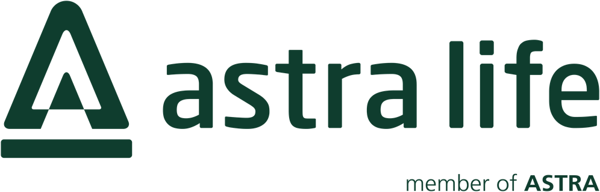
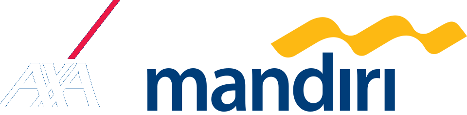
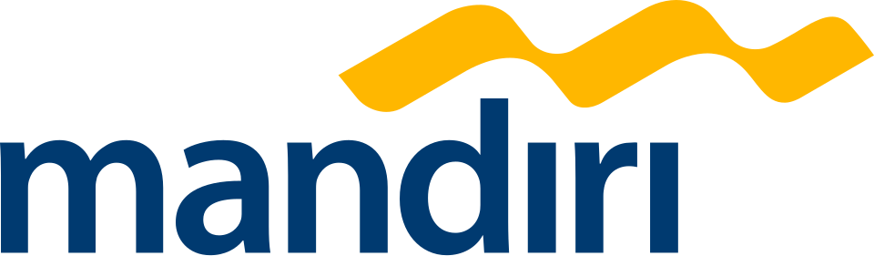
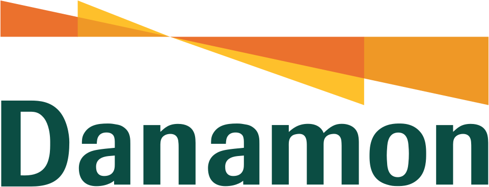

End-to-end SIT
Scenario design and execution across integrated systems — from new business and underwriting through billing, claims and surrender.
Software Quality Assurance · Insurance & Banking
I test the systems behind life insurance and banking — from new business to claims — so every release reaches customers exactly as designed.
iPlus Core Life System
End-to-end · Web application
Modules verified
5 / 5
Illustrative view of a typical SIT coverage report
Onsite QA engagements at




01 — Profile
I am a Software Quality Assurance professional based in Bogor, working onsite with Indonesia's leading life insurers and banks. My work sits at the point where business rules meet core systems — designing and executing System Integration Testing, supporting User Acceptance Testing, and running Technical Verification Testing for mobile releases.
Across nine years I have covered the full policy lifecycle: new business, underwriting, premium billing and collection, claims, surrender, reinsurance, investment and accounting journals. I translate domain requirements into test scenarios, coordinate defect fixes between regional engineering teams and business stakeholders, and make sure a release is genuinely ready before it goes live.
02 — Capabilities
A QA practice built around the realities of regulated insurance and banking systems: dense business rules, long policy lifecycles, and zero tolerance for silent failures.
Scenario design and execution across integrated systems — from new business and underwriting through billing, claims and surrender.
Coordinating business-user acceptance cycles and running Technical Verification Testing for mobile application releases.
Turning product rules — riders, dividends, churning, reinsurance treaties — into traceable test cases and expected outcomes.
Bridging business stakeholders and regional engineering teams to reproduce, prioritise and close defects without losing context.
Core systems worked in
03 — Experience
Consulting and delivery roles with technology firms that place QA specialists inside enterprise insurance and banking programmes.
Onsite QA for Astra Life, executing end-to-end SIT on the iPlus Core Life System across new business, underwriting, premium billing and collection, claims and surrender.
accordinnovations.comDelivered QA across life insurance programmes for Allianz Life Indonesia and AXA Mandiri Financial Services, covering backend SIT, UAT and regional system changes.
Quality assurance for life insurance delivery, including SIT execution and test coordination with business and technology stakeholders.
nityo.comQA engagement supporting enterprise insurance delivery, with end-to-end testing and defect follow-up.
Onsite at Bank Mandiri, executing SIT for web and mobile applications integrated with AS/400 core banking systems.
assindo.co.idTechnical consulting for enterprise projects — the foundation for a QA career focused on systems, integration and business rules.
04 — Client engagements
Selected onsite programmes. Each engagement covers system integration testing, test coordination and release verification for business-critical modules.
2026 — Present
iPlus Core Life System · Web application
OPUS & EZCAP core systems · Backend products
AS/400 · RLS (Regional Life System)
LifeAsia · PRUForce platform
AS/400 core banking · Web & mobile
Quality assurance engagement · May – Aug 2017
danamon.co.idQuality assurance engagement · Feb – Apr 2017
samudera.idClient names and logos are used only to identify professional engagements and remain trademarks of their respective owners.
05 — Project index
A filterable index of the products, modules and integrations I have tested. Hover a row for its client and domain.
06 — Skills
Deep familiarity with the core platforms that run Indonesian life insurance and banking — and the domain language that comes with them.
Education
Bachelor's degree, Information Technology
07 — Contact
Available for Software Quality Assurance engagements across insurance, banking and enterprise integration — onsite in Jakarta or remote-ready.